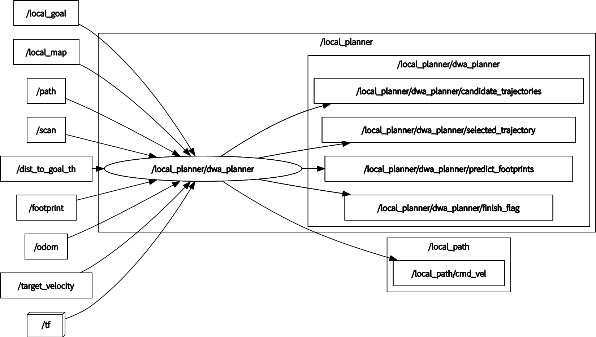

dwa_planner

demo_dwa
Environment
- Ubuntu 20.04
- ROS Noetic
Install and Build
cd catkin_workspace/src
git clone https://github.com/amslabtech/dwa_planner.git
cd dwa_planner
catkin build --this
Node I/O

dwa_planner I/O diagram
Optional Topics
- /scan
- Default input is /local_map
- If /scan is used, set
use_scan_as_inputto true
- /footprint
- robot footprint
- If /footprint is used, set
use_footprintto true footprint_publishernode inamsl_navigation_utilsrepository publishes rectangular footprint
- /path
- for path cost
- Default evaluation does not use path cost
- If path cost is used, set
use_path_costto true- Give a part of the global path (edge)
Parameters
- HZ
- main loop rate (default: 20[Hz])
- TARGET_VELOCITY
- max velocity of robot's target velocity (default: 0.55[m/s])
- ROBOT_FRAME
- robot's coordinate frame (default: base_link)
Runtime requirement
- TF (from LocalMap_FRAME to ROBOT_FRAME) is required
How to Use
- for local path planning roslaunch dwa_planner local_planner.launch
References
- D. Fox, W. Burgard, and S.Thrun, "The dynamic window approach to collision avoidance", IEEE Robotics Automation Magazine, 1997.